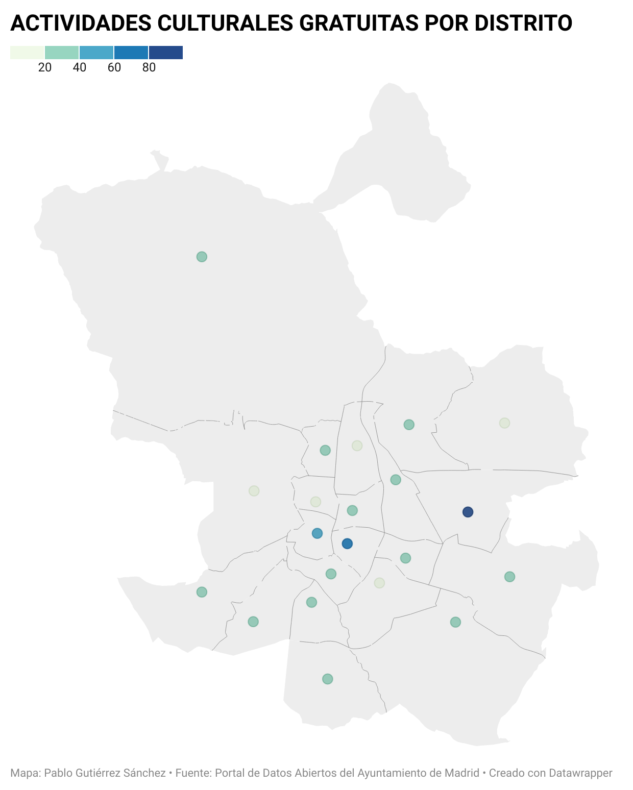
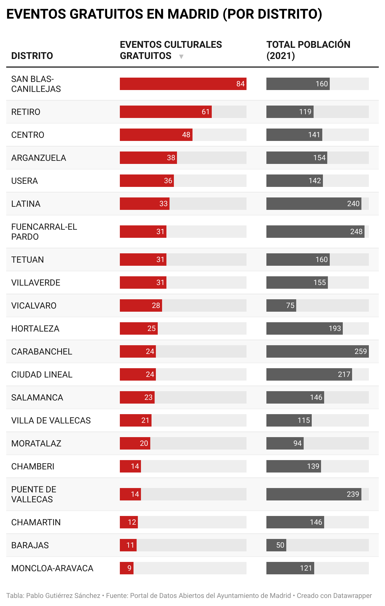
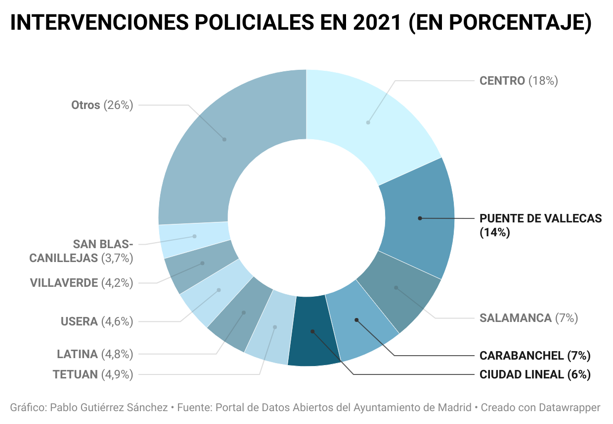

LA OFERTA DESIGUAL DE CULTURA EN MADRID
PABLO GUTIÉRREZ SÁNCHEZ
Durante 2021, el Ayuntamiento de Madrid ha programado un total de 792 eventos culturales, la mayoría de ellos concentrados a lo largo del último tercio del año, coincidiendo con la temporada navideña. De esos 792 eventos, 619 han sido gratuitos, total o parcialmente. Sin embargo, la distribución por distrito de este tipo de eventos es bastante desigual. Así, por ejemplo, el distrito madrileño que cuenta con más oferta de actividades culturales gratuitas es San-Blas Canillejas, seguido de lejos por Retiro y Centro. El top cinco lo completan Arganzuela y Usera.
 Mapa Interactivo
Curiosamente, ninguno de estos distritos se encuentra entre los más poblados de la ciudad, lo que refleja un posible desajuste entre la oferta cultural y el número de habitantes de cada zona. Esta sospecha se confirma al comprobar que Carabanchel, el distrito más poblado de la capital con 258.633 habitantes, no está ni siquiera entre los diez primeros distritos con más eventos gratuitos. Lo mismo ocurre con Puente de Vallecas, el cuarto distrito en cuanto a número de habitantes y, sin embargo, entre los cuatro últimos por lo que respecta a su oferta cultural. Estos son los casos más prominentes, aunque tampoco Latina, el segundo distrito con mayor número de habitantes, se encuentra entre los cinco primeros puestos en el ranking de oferta cultural municipal.
 Interactivo
Todos estos datos pueden resultar insignificantes o poco interesantes por sí solos. Sin embargo, al ponerlos en relación con otra variable, la frecuencia de delitos por distrito, el asunto empieza a cobrar cierto interés. Según datos proporcionados por la Dirección General de la Policía Municipal, los distritos que concentraron el mayor número de intervenciones policiales (con detenidos) en 2021 fueron Centro, Puente de Vallecas, Salamanca, Carabanchel y Ciudad Lineal. Tres de estos distritos —Puente de Vallecas, Carabanchel y Ciudad Lineal—, son precisamente los menos beneficiados por la oferta de actividades culturales municipales, con todo lo que ello implica para el ocio y la educación de sus habitantes más jóvenes. Por el contrario, distritos como San Blas-Canillejas o Arganzuela, cuyos habitantes disfrutan de una amplia programación de eventos culturales, presentan índices de delincuencia mucho más moderados. Es también el caso de Retiro, aunque puede que aquí intervengan también otros factores de índole socioeconómica.
 Interactivo
CÓMO LO HE HECHO
Para la elaboración de esta historia y de los gráficos que la acompañan, he partido de de varios conjuntos de datos, todos ellos descargados del Portal de Datos Abiertos del Ayuntamiento de Madrid. El conjunto de datos principal es el que tiene que ver con las actividades culturales y de ocio municipales, recuperado de esta página. A partir del fichero .csv, he empleado la herramienta Open Refine para hacer una limpieza y selección de los datos. El csv original proporcionaba mucha información poco relevante para mi objetivo y, por ello, el primer paso consistió en borrar todas aquellas columnas que no me interesaban. Además, el documento incluía eventos programados desde 2018 hasta 2022, un periodo de tiempo demasiado largo. Por ello, para acotar la búsqueda, he hecho una faceta de tiempo a la columna de «fecha» y me he quedado sólo con los eventos programados para el año 2021. El siguiente elemento en el que me he fijado es el precio, esto es, cuántos eventos gratuitos había programados. El fichero original contaba ya con una columna en la que se daba esta información de acuerdo con una lógica binaria (donde 1 significa que el evento es gratuito y 0 que no). No obstante, en algunos casos esta información se daba de manera contradictoria, pues aunque en esta columna el valor era 0, en la columna contigua se registraba que el acceso era libre o algo parecido. En las filas en que he constatado este error, he cambiado manualmente el valor 0 por el valor 1, con lo que he obtenido el número real de eventos gratuitos. Hecha esta corrección, he hecho una faceta numérica a esta columna para que me muestre sólo los valores por debajo de 1 y los he borrado (previamente he tenido que hacer sobre todas las celdas de esta columna la función toNumber). De este modo me he quedado sólo con los eventos gratuitos.
Lo siguiente que me interesaba era comprobar cómo era la distribución de estos eventos en función del distrito. Esta información estaba incluida parcialmente en el fichero original, que informaba sobre la ubicación del evento, pero no proporcionaba un recuento de cuántos de ellos se celebraban en este u otro distrito. Para obtener esta información, por tanto, he tenido que crear una nueva columna, basada en la columna «DISTRITO-INSTALACION», sobre la que hecho la función value.facetCount. Esta función me ha devuelto el número de veces que aparecía, por ejemplo, la palabra «ARGANZUELA» en la columna «DISTRITO», es decir, el total de eventos celebrados en el distrito de Arganzuela. Estos son los datos que, combinados con el censo de 2021 por distrito (obtenido de la misma web), he empleado para elaborar algunos de los gráficos de la noticia con la herramienta Datawrapper.
Para las dos últimas gráficas, con las que he pretendido contrastar la información de los primeros, he partido de un csv proporcionado por la Dirección General de la Policía Municipal de Madrid, disponible en el Portal de Datos Abiertos del Ayuntamiento de Madrid, relacionado con las actuaciones de la Policía Municipal en cada distrito (este es el enlace). Aunque en el archivo original esta información se proporciona desglosada por meses, con la herramienta Open Refine me he quedado sólo con la columna «Total», que refleja el total de intervenciones durante el año 2021. Estos son, por tanto, los datos que he introducido en Datawrapper para la elaboración de las dos últimas gráficas.